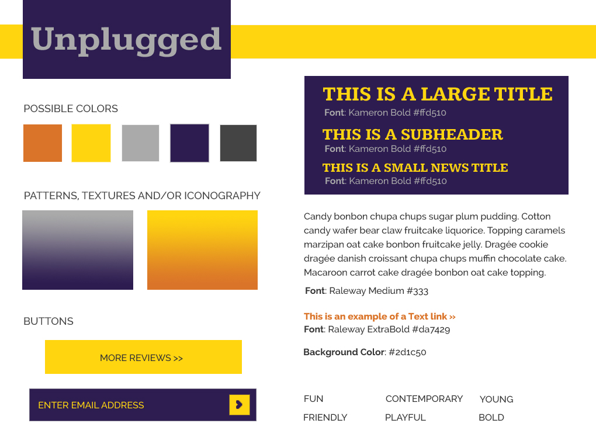

This was a development project that involved translating an already designed website into responsive code. Unplugged is a music publication that covers all the latest happenings in the world of indie rock.
This was mostly a development project with some basic design such as color and font variation. Most of the copy and images were provided in order to focus on coding out the design. First I created a style tile to set up the look & feel of the site and then I took a mobile-first approach and drafted all the wireframes before creating prototypes and then translating it all to code.
( Style Tile for Unplugged Music Blog )
In this sample project I coded responsive designs for the four main areas of content, news, reviews, concerts and the about page. While they are not currently launched, you can preview them upon request.